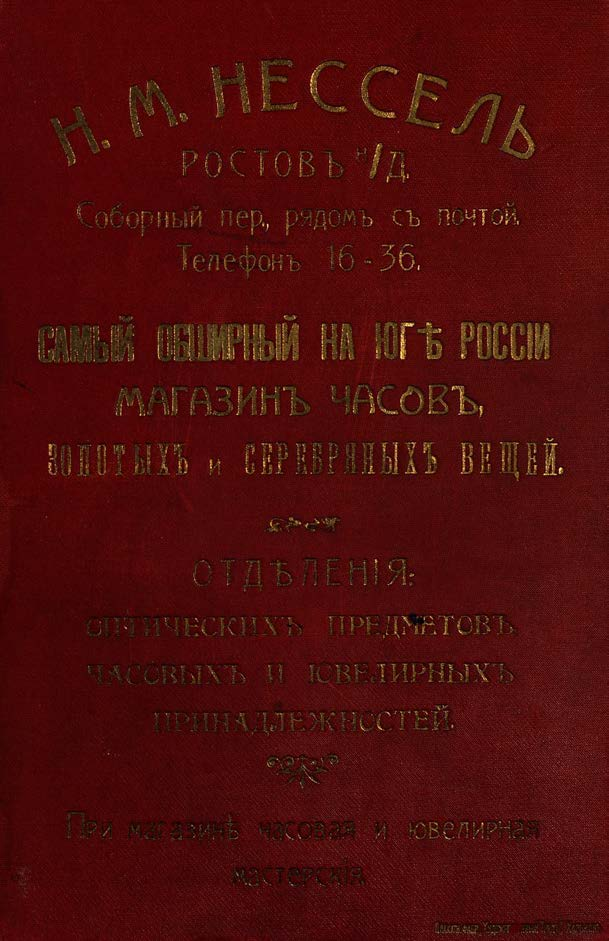

Лист источника 602
Скан

Распознанный текст
Н. М. НЕССЕЛЬ
РОСТОВЪ ⁿ/Д.
Соборный пер., рядомъ съ почтой.
Телефонъ 16-36.
САМЫЙ ОБШИРНЫЙ НА ЮГѢ РОССІИ
МАГАЗИНЪ ЧАСОВЪ,
ЗОЛОТЫХЪ и СЕРЕБРЯНЫХЪ ВЕЩЕЙ.
ОТДѢЛЕНІЯ:
ОПТИЧЕСКИХЪ ПРЕДМЕТОВЪ,
ЧАСОВЫХЪ И ЮВЕЛИРНЫХЪ
ПРИНАДЛЕЖНОСТЕЙ.
При магазинѣ часовая и ювелирная
мастерскія.
ПЛАКАТН. ФАБР. ХУДОЖЕСТВЕННЫЙ ПЕЧАТЬ, ХАРЬКОВЪ